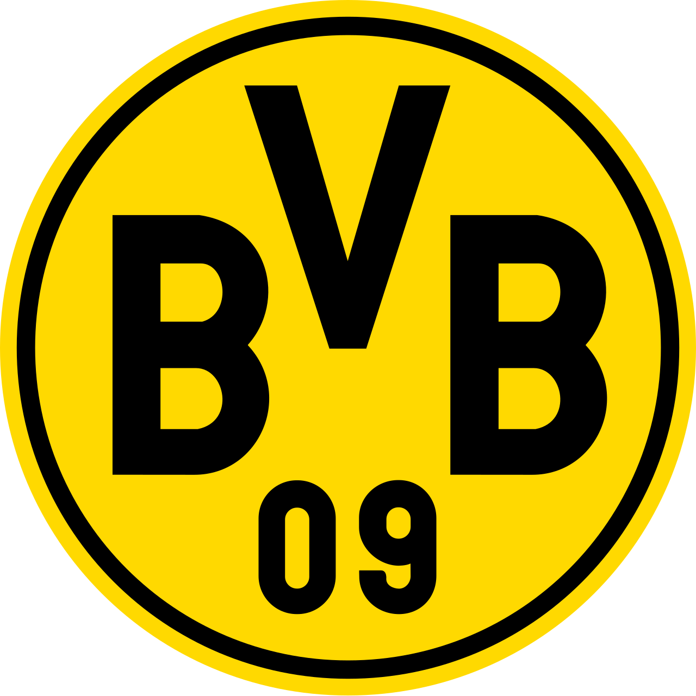

Die Schwarzgelben
El Borussia Dortmund fue fundado en 1909 y es uno de los clubes más importantes de Alemania.
| Dato | Información |
|---|---|
| Fundación | 1909 |
| País | Alemania 🇩🇪 |
| Ciudad | Dortmund |
| Estadio | Signal Iduna Park |
| Liga | Bundesliga |
El Dortmund ganó la Champions League en 1997.
| Jugador | Posición |
|---|---|
| Serhou Guirassy | Delantero |
| Julian Brandt | Centrocampista |
| Karim Adeyemi | Delantero |
El Signal Iduna Park es conocido por su enorme afición y por la famosa "Yellow Wall".
El Borussia Dortmund ganó la Champions League de 1997 al derrotar a la Juventus.